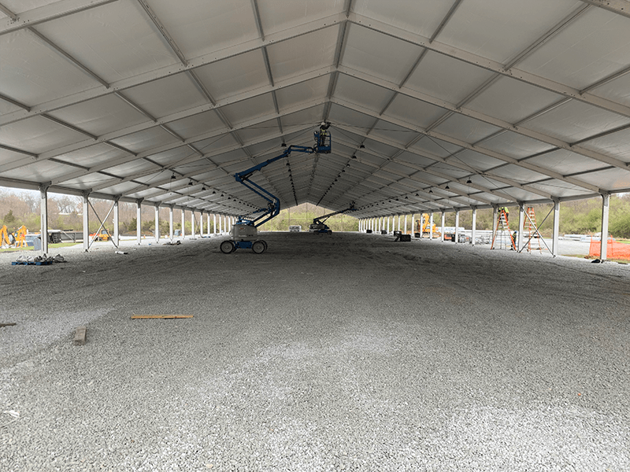
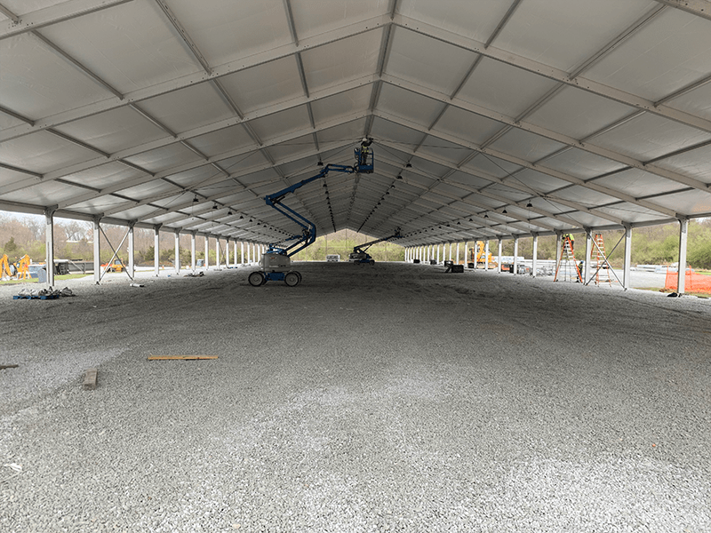

Project Overview
Emergency conversion of an athletic complex into a 1,024-bed non-acute COVID-19 treatment facility, completed in 28 days with first beds delivered 12 hours ahead of schedule.
This project demonstrated the critical role architects play in emergency response—rapidly adapting existing structures to meet urgent healthcare needs while navigating compressed timelines, evolving requirements, and multi-agency coordination.
Emergency Response
At the height of the COVID-19 pandemic's first wave in New York, every day mattered. The project required:
- 28-Day Timeline – From mobilization to operational facility
- Rapid Evaluation – Immediate assessment of existing structures for conversion
- Multi-Agency Coordination – USACE, FEMA, NY State, SUNY, healthcare providers
- Evolving Requirements – Adapting to changing medical protocols in real-time
Project Contribution
- Performed rapid evaluations for Design-Build conversion of athletic facilities
- Served as primary on-site lead for ADA-compliant bathroom/shower installations
- Coordinated with remote architects while supervising field crews
- Produced daily field reports ensuring plans matched actual conditions
- Resolved conflicts between design intent and field conditions in real-time
Key Challenges
Compressed Timeline
28 days from start to 1,024 operational beds
ADA Compliance
Accessible facilities in a temporary installation
Field Coordination
Real-time design adjustments based on site conditions
Multi-Agency Work
Coordinating federal, state, and local requirements
Project Success
The facility was ready for patients 12 hours ahead of the aggressive 28-day schedule—a testament to the dedication of every team member and the effectiveness of integrated Design-Build delivery for emergency response.
This project demonstrated that quality architecture can be delivered under the most demanding circumstances when the right team comes together with clear purpose.
Need Rapid Response Architecture?
We've proven our ability to deliver under the most demanding timelines.
Contact Us